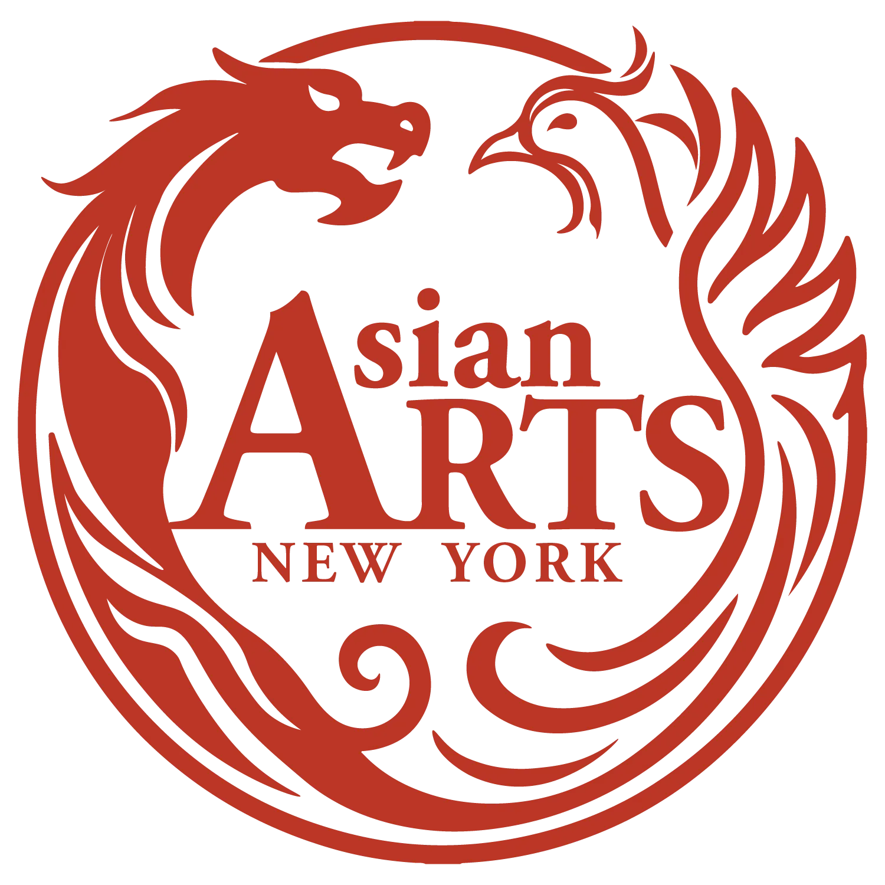

Website Structure
Built responsive pages and reusable sections for events, programs, organization information, galleries, and future content updates.
Brand Communication System
A cultural communication project connecting responsive website design, visual identity, event promotion, poster design, and print materials into one consistent digital and physical experience.


Asian Arts New York needed a clearer way to present its cultural programs, events, organizational identity, and promotional materials across both digital and print platforms.
I designed and developed the organization’s responsive website while also creating supporting visual materials, including event posters, promotional layouts, and a 20-page printed booklet. The project was approached as one connected communication system rather than separate design tasks.
Role
UX/UI design, visual communication, front-end development, branding support, print design, and website maintenance.
Tools
HTML, CSS, JavaScript, Tailwind-style layout, and Adobe Creative Suite.
The organization had to communicate many types of content: events, programs, artist information, community updates, and promotional materials. The challenge was to organize this information clearly while keeping the brand experience consistent across web, print, and event communication.
My solution focused on a reusable structure, consistent visual language, and flexible layouts that could support future updates without making the organization’s communication feel fragmented.
Built responsive pages and reusable sections for events, programs, organization information, galleries, and future content updates.
Refined logo usage, typography, spacing, image treatment, and layout hierarchy to create a unified identity across digital and print materials.
Designed posters, event visuals, roll-up materials, and a 20-page booklet to support cultural storytelling beyond the website.
A focused selection of final deliverables showing how the communication system extended across event promotion, booklet layout, and physical display materials.

The final system improved how Asian Arts New York presents its events, programs, and organizational identity across digital and print materials. The website became easier to navigate and update, while the posters, booklet, and event visuals extended the organization’s communication beyond the screen.
01
Clearer content structure
02
More consistent visual identity
03
Reusable web and print system